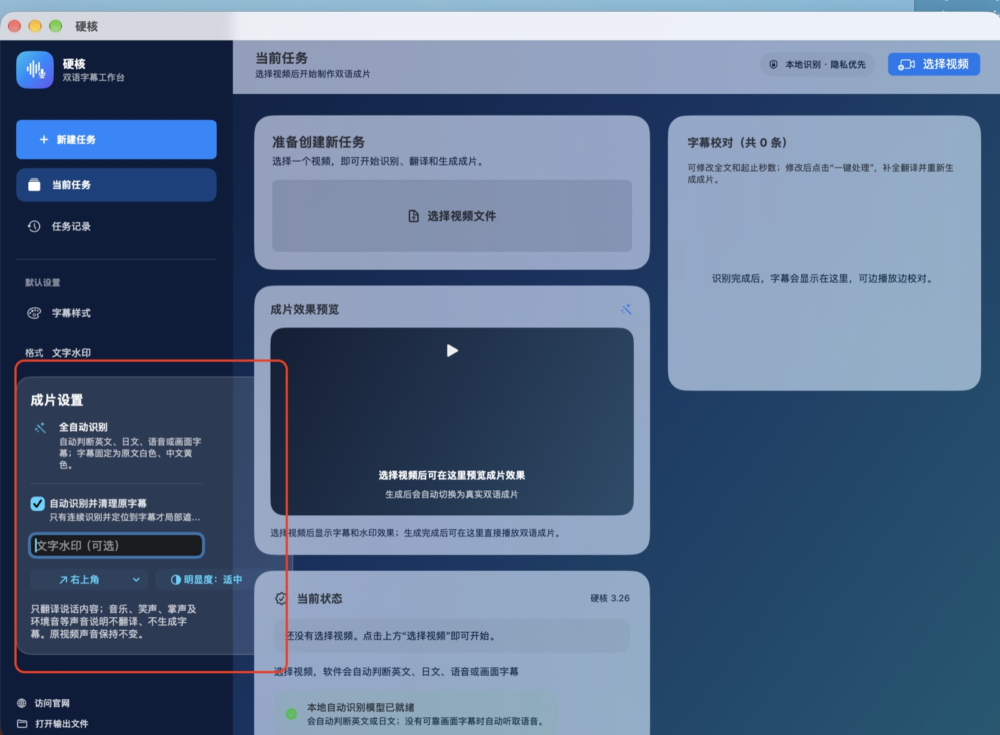

硬核 3.26 · Mac 双语字幕工具
把视频对白，变成
清楚可靠的双语成片
自动判断英文、日文、语音或画面字幕。画面已有英文时保留英文，只新增中文；没有字幕时生成中英双语。音乐、笑声、掌声与环境音不翻译。
✓ 本地识别✓ 原声音保留✓ 成片自动自检

现在的硬核
不是“给所有声音加字幕”
不是“给所有声音加字幕”
而是先理解视频，再决定怎么处理
识别、翻译、字幕编排和视频导出在同一个工作台完成，减少反复切换工具。
识
自动识别内容
自动区分英文、日文，以及语音或画面字幕。语种结果不可靠时停止自动翻译，避免生成错误字幕。
声
只翻译说话
音乐、笑声、掌声、关门声和环境声等非语言内容不翻译、不生成字幕，原视频声音保持不变。
字
识别画面字幕
逐段检查视频已有文字。画面已有英文字幕时不遮挡、不重复嵌入英文，只在合适位置补中文。
帧
保留真实帧率
针对高帧率和可变帧率素材选择合适导出方式，并对输出时长、目标帧时间和实际帧率进行自检。
校
字幕可校对
生成前可修改全文和起止时间；成片与双语 SRT 自动保存，方便继续剪辑或交付。
隐
本地处理优先
语音识别引擎随 App 提供；识别模型首次使用时下载到本机，日常素材无需上传到视频服务器。
实测与自检
“导出成功”还不够
“导出成功”还不够
成片必须能复核
硬核会在导出后检查时长、时间轴与实际帧率。字幕规则另有回归检查，避免修复一个问题又带回旧问题。
✓ 原视频和既有成片始终保留
✓ 高帧率素材不会静默降成 30fps 或 17fps
✓ 英文字幕段与无字幕语音段可在同一视频中分别处理
✓ 识别失败时停止，不用错误结果继续生成
当前开发构建验证
60项字幕规则回归检查
30 → 30fps 实测源片与成片一致
0.01 秒一次 92.8 秒样片的时长差
以上为指定测试样片结果，不代表所有素材的固定速度或精度承诺。
安装与使用
下载、安装，开始制作字幕
下载并解压 ZIP
此下载包没有开发者身份签名和苹果公证。解压后把包内的硬核 App 拖入“应用程序”。
允许首次打开
如果 macOS 阻止打开，请到“系统设置 → 隐私与安全”点击“仍要打开”，按系统提示确认。受管理的电脑可能不允许运行。
首次准备识别模型
首次识别可能需要下载约 1.5GB 的本地模型；之后可重复使用。
选择视频，一键处理
识别、翻译、成片和 SRT 会保存到输出文件夹。
Mac 下载
下载硬核 3.26
适用于 Apple Silicon Mac，macOS 26.4 及以上。首次打开可能需要在“隐私与安全”中手动允许。此包未完成另一台 Mac 的完整验证，请保留原视频并复核成片。
常见问题
开始前需要知道
下载后提示无法验证开发者怎么办？
此版本没有开发者身份签名和苹果公证。请先尝试打开，再到“系统设置 → 隐私与安全”点击“仍要打开”。无需关闭系统安全保护。Apple 芯片运行所需的本地临时签名已保留。
别人下载后为什么还需要下载语言模型？
App 内置识别引擎，但约 1.5GB 的识别模型不放在 ZIP 安装包中。首次使用时下载一次，之后保存在本机重复使用；中文翻译也可能需要下载系统语言资源。
视频已经有英文字幕，会被遮住吗？
当前规则不会使用黑色遮盖。系统会保留原画面中的英文字幕，并只新增中文；没有画面字幕的对白段则生成中英双语。
音乐或环境声会不会被翻译？
不会。只有检测为说话内容的片段才进入翻译；音乐、笑声、掌声和环境声不生成字幕。
制作完成后需要校对吗？
建议播放成片，检查字幕内容和声音是否一致。软件提供字幕校对功能，可修改文字和起止时间；请保留原视频。